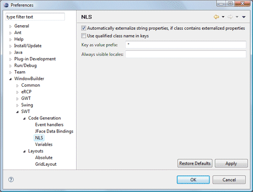
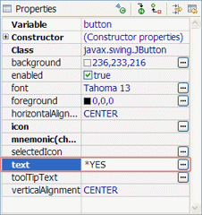

|
 This page is used to control various SWT > Code Generation > NLS options. Automatically externalize string properties, if class contains externalized propertiesThis preference determines whether Designer will automatically externalize the string properties for new widgets as they are added. This preference only applies to classes that have already had their strings externalized. Use qualified name in keysThis preference determines whether qualified names are used to create keys. Key as value prefixThis preference determines what prefix should be used for NLS keys directly entered into the property pane.  Always visible localesThis preference determines what locales should always be listed. This should be a comma separated list such as "en, de, ru".
|